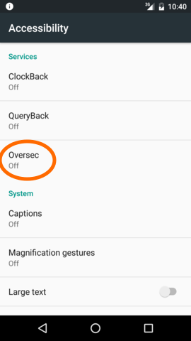
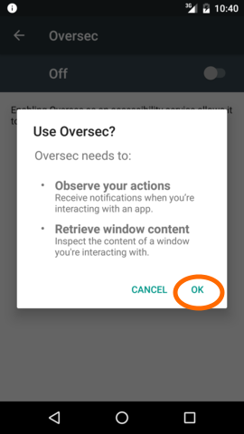
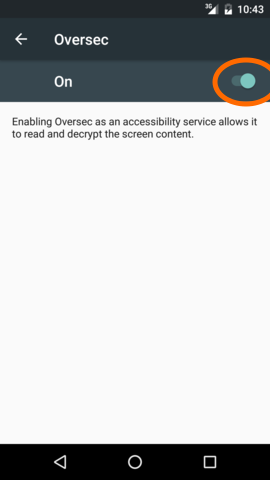
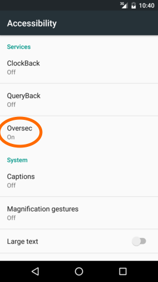

The basic operating principle of Oversec is that it constantly monitors the screen for encrypted text.
To be able to read the screen contents, it has to be enabled as a so called "Accessibility Service".
So as the first step, before you can use Oversec, you need to enable Oversec as an Accessibility Service in Androids "Accessibility Settings".
Tapping on "Configure" will lead you directly to the relevant Settings page:
Now tap on "Oversec"

Now tap on the switch in the upper right corner
Tap on "OK"

Now the switch should be ON. Tap on "BACK"

Now Oversec should be "on". Tap on "BACK"

On some phones with a custom Android version, the settings page that let's you configure Accessibility Services is not available or not in the expected place.
Please manually try to locate the "Accessibility" page in your phone's Settings and then enable Oversec as an Accessibility Service.
This is the list of all apps you currently have installed.
The Oversec buttons and overlays will only show on top of apps that are checked here. Please review the list and check all apps that you want to work with Oversec.
Note: Tap on the questionmark icon on any app to show additional, Oversec-related information for this app.
Note: You can also deactivate an app for Oversec after pressing the Oversec Config-Button while the app is shown.
See Symmetric Keys
By default, Oversec prevents the system from taking screenshots while showing sensitive information. Depending on the way the screenshots are made, taking screenshots either fails or produces a blank or black image.
You can disable this behavior temporarily if you want to take screenshots to show or tell about Oversec, but we strongly recommend to keep this setting OFF!